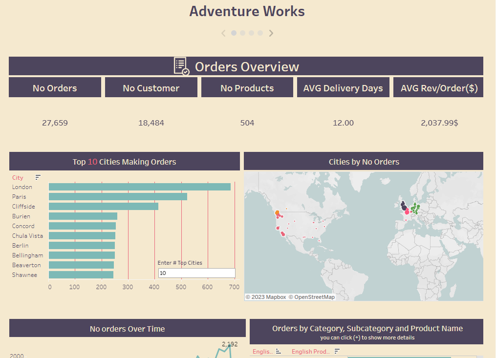
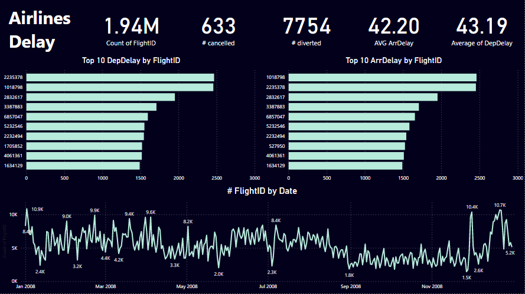
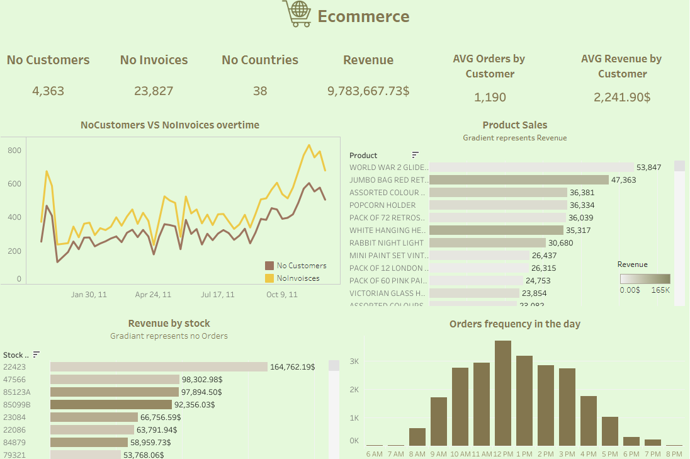
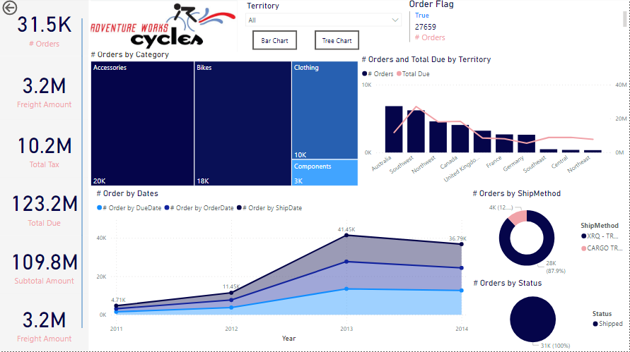

Extract more than twenty insights, especially about teams and cup from the available data
using T-SQL:(Functions, Stored Procedures, Triggers, VIEW, Window functions, Common Table
Expressions (CTE), Subquires)Tool: Microsoft sql server.

in this project I worked with AdventureWorksDW 2022 (DWH) from Microsoft for learning purposes,
I made my analysis and made an interactive story consists of four dashboards(Order Overview, Sales Overview, Curency Overview, Customer Overview).tools:MS sql server, Tableau Desktop.

First, I obtained data from a CSV file and performed some transformations using Power Query.
Then, I converted this dataset to a star schema, created the Date dimension using DAX, and defined some measures.
Finally, I created this dashboard that provides an overview of Airlines' Delay, including suitable charts with tooltips and drills through to enhance the insight.
Tool: Power Bi

Case Study #1 of 8 Week SQL Challenge by Danny Ma.I used in this project:
- Joins
- Case Expressions /Case Statements
- Window Functions( RANK() , DENSE_RANK() )
- Date /Time Functions( DATEADD() )
- Common Table Expressions (CTE)
- Aggregate functions ( SUM() , COUNT() , STRING_AGG )
- CAST()

I answered many questions and visualize insights from CSV file in an interactive dashboard.Tool: Tablaeu Public

in this project I worked with AdventureWorksDW 2022 (DWH) from Microsoft for learning purposes,
I performed some transformations and preprocessing with DAX and Power query,
Then i made my analysis and finally made an interactive dashboard.
Tool: Power bi